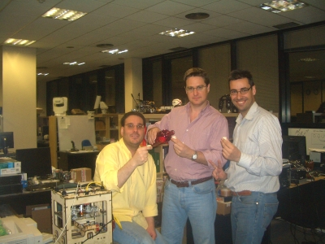
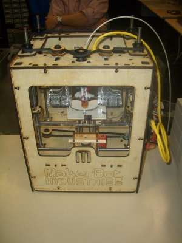
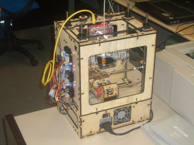
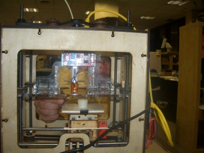
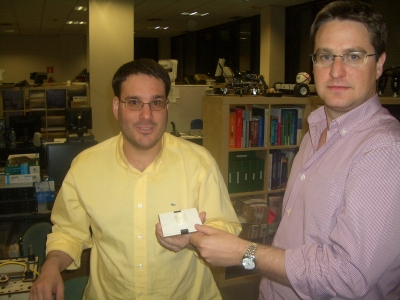
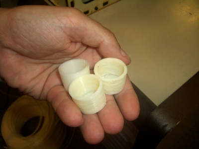
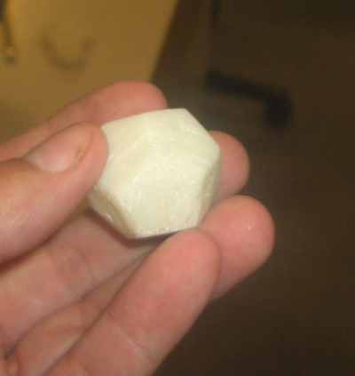
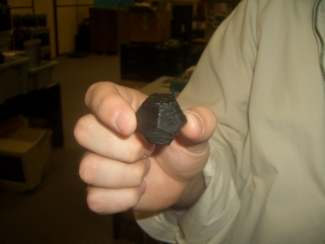
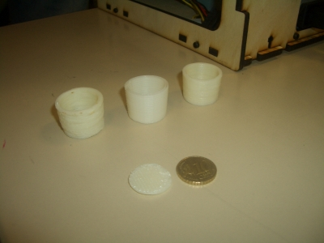
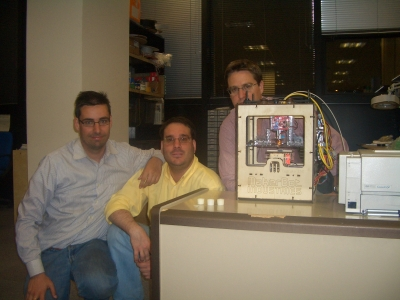

Nuestra Cupcake ya está totalmente operativa. Hoy hemos impreso nuestras primeras piezas. Como no podía ser de otra manera, han sido unos vasos de chupito para poder brindar con ellos.
Sobre las 4:45 Andrés me envió un correo diciéndome que habían solucionado el problema que teníamos con el cabezal. La máquina estaba lista para imprimir. Les envié un par de modelos para probar y sobre las 18:45 salí disparado hacia Flir.
Terminamos de montar la electrónica sobre la máquina. Aquí se puede ver la parte frontal. La electrónica está situada en uno de los laterales:

y aquí se puede ver la parte trasera:

Cuando solucionamos los problemas del software, todo empezó a funcionar mucho mejor. El segundo vaso de chupito se estaba imprimiendo. En esta foto se puede ver la impresión en curso:

Y aquí están Ricardo y Andrés con el chupito recién parido.

En esta foto se pueden ver mejor los vasos. Uno de ellos es el que imprimí en la Reprap del Medialab prado, en febrero. Los otros dos se han sacado con nuestra máquina. El primero salió un poco tosco y el segundo mucho más refinado.

Pero había que seguir probando. Nos bajamos este dodecaedro de Thingiverse y … ¡tachán! al cabo de 17 minutos ya estaba en nuestra manos. ¡¡Nos habíamos bajado un objeto “digital” de internet y lo habíamos convertido en algo real!!

Andrés lo tuneó, pintándolo de negro:

Pero quedaba una prueba mucho más importante por hacer. Imprimir un objeto “hola mundo” creado por nosotros. Los objetos anteriores habían sido diseñados por otras personas. En uno de los post anteriores, estuve diseñando algunos objetos simples con Blender. Tomamos el más sencillo y lo imprimimos: la moneda. Aquí la podemos ver junto a una moneda de 10 céntimos y a los chupitos:

Con esto ya teníamos el círculo completado. Somos capaces de crear un objeto “de la nada”. Primero diseñamos el objeto digital mediante Blender. Luego lo materializamos en algo real usando la Cupcake. Esto que parece una chorrada, tiene enormes implicaciones. ¡¡Estamos ante el comienzo de una tecnología que lo va a revolucionar todo!!.
Y para terminar, cómo no, una foto de familia 😉

Me encanta!
Estoy deseando ver eso en vivo!!! Nos vemos a primeros de junio en Madrid.
Eladio: Cuando vengas te hacemos una demo. Es una pasada!!
Gabriel: Muchísimas gracias!! Gracias a vosotros, los del Medialab Prado, que invitasteis a Adrian Bowyer e hicisteis el taller de Reprap es por lo que ahora nosotros tenemos nuestra Reprap. Todo un sueño hecho realidad 🙂
uau uau uau!!! De mayor quiero ser como vosotros xD
Nos vemos en la UAM 🙂
Enhorabuena! No os imprimais guarradas que sé que lo estáis pensando 😉
Desde la Asamblea sabia que te fabricarias una 3D, muy buena pinta tiene, os felicito.
Que material utilizais para la impresion 3D ?
Cuando hablastes sobre la 3D en la asamblea pensé en fabricarme una pero no se porque se me quitaron las ganas depues.
Lo de cambiarme a Linux lo pensé tambien en tu discurso de la asamblea y eso si lo he cumplido, un buen Ubuntu 9.4 es lo que uso ahora, jejeje
Hola Paco!
El material es ABS[1]. Es el mismo plástico de las piezas de Lego. Se derrite a los 220 grados. Vienen en una bobina. El hilo de plástico se va introduciendo en el cabezal donde se derrite y se deposita sobre la superficie.
Capa a capa, las piezas se van imprimiendo. Es algo increible.
Las piezas salen algo toscas, pero totalmente usables. Ahora mismo estoy imprimiendo mis módulos y1. Cuando los tenga funcionando pondré un post para enseñaros el resultado 😉
Me alegra que estés probando Linux. Que existan alternativas siempre es bueno 🙂
[1]http://es.wikipedia.org/wiki/Acrilonitrilo_butadieno_estireno
Hola, una pregunta.
¿la cupcake la habéis comprado en http://www.makerbot.com?
O es de fabricación propia.
En caso de ser casera, ¿donde habéis conseguido los motores paso a paso , las PCB , etc..?
Tengo la intención de montar una reprap y estoy en la fase de “research”
lo que no sé es si vale más la pena comprar el kit o montarla por mi cuenta.
Saludos y gracias.
Enhorabuena por el blog, es muy interesante.
Hola Raúl!
Sí, la hemos comprado en Makerbot. Yo creo que sí que merece la pena comprar el kit, aunque de momento se agotan en seguida.
Lo que sí es muy interesante es una vez que tienes la Cupcake, montar una Reprap imprimiendo tus propias piezas en la cupcake 😉 En ese caso la electrónica si quieres la puedes seguir comprando en Makerbot, así como también los motores.
Saludos, Juan